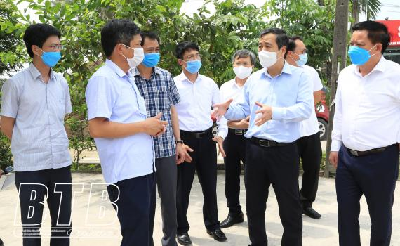
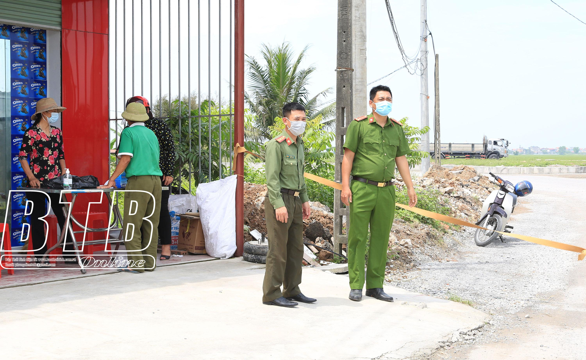

Quyết liệt, kiên quyết, kích hoạt mọi biện pháp, hạn chế thấp nhất nguy cơ dịch Covid-19 lây lan ra cộng đồng
Đó là chỉ đạo của đồng chí Ngô Đông Hải, Ủy viên Ban Chấp hành Trung ương Đảng, Bí thư Tỉnh ủy tại buổi kiểm tra, chỉ đạo công tác triển khai ứng phó khi xuất hiện trường hợp dương tính với SARS-CoV-2 trên địa bàn huyện Thái Thụy vào sáng ngày 6/5. Cùng đi có đồng chí Nguyễn Khắc Thận, Phó Bí thư Tỉnh ủy, Chủ tịch UBND tỉnh, Trưởng ban Chỉ đạo phòng, chống dịch Covid-19 tỉnh.

Đồng chí Ngô Đông Hải, Ủy viên Ban Chấp hành Trung ương Đảng, Bí thư Tỉnh ủy kiểm tra, chỉ đạo công tác phòng, chống dịch tại xã Hồng Dũng, huyện Thái Thụy. Ảnh: Thành Tâm
Theo báo cáo của Trung tâm Kiểm soát bệnh tật tỉnh, đến sáng ngày 6/5, trên địa bàn huyện Thái Thụy có 3 trường hợp dương tính với SARS-CoV-2 ở các xã Hồng Dũng, Thụy Quỳnh. Ngay sau khi có thông tin về các trường hợp dương tính với SARS-CoV-2, Ban Chỉ đạo phòng, chống dịch Covid-19 huyện Thái Thụy đã kích hoạt các biện pháp phòng, chống dịch, trong đó chỉ đạo các địa bàn có trường hợp dương tính với SARS-CoV-2 tổ chức phong tỏa, khẩn trương rà soát, truy vết, cách ly các trường hợp dương tính với SARS-CoV-2; tổ chức lấy mẫu xét nghiệm đối với các trường hợp F1, F2, F3, đồng thời thực hiện các biện phòng, chống dịch cần thiết. Qua rà soát, truy vết có 23 trường hợp F1, tất các các trường hợp này đã được cách ly và lấy mẫu xét nghiệm.
Sau khi nghe Ban Chỉ đạo phòng, chống dịch Covid-19 huyện Thái Thụy báo cáo về các biện pháp phòng, chống dịch và kiểm tra trực tiếp công tác phòng, chống dịch Covid-19 tại thôn Đông Hòa, xã Hồng Dũng (Thái Thụy) - địa bàn có ca dương tính với SARS-CoV-2, đồng chí Bí thư Tỉnh ủy và đồng chí Phó Bí thư Tỉnh ủy, Chủ tịch UBND tỉnh, Trưởng ban Chỉ đạo phòng, chống dịch Covid-19 tỉnh ghi nhận sự vào cuộc kịp thời của Ban Chỉ đạo phòng, chống dịch Covid-19 huyện Thái Thụy và Ban Chỉ đạo phòng, chống dịch Covid-19 xã Hồng Dũng trong việc tổ chức phong tỏa và triển khai các biện pháp phòng, chống dịch đối với địa bàn có trường hợp dương tính với SARS-CoV-2.
Đồng chí Bí thư Tỉnh ủy và đồng chí Phó Bí thư Tỉnh ủy, Chủ tịch UBND tỉnh, Trưởng ban Chỉ đạo phòng, chống dịch Covid-19 tỉnh nhấn mạnh: Việc phong tỏa là biện pháp kịp thời để ngăn ngừa dịch lây lan ra cộng đồng, tuy nhiên đối với những địa bàn có trường hợp dương tính với SARS-CoV-2 phải thực hiện nghiêm việc giãn cách cục bộ với phương châm “Từng gia đình phải cách ly lẫn nhau, người người phải cách ly lẫn nhau, hạn chế đi lại, giao tiếp, chỉ ra ngoài khi có các nhiệm vụ thiết yếu, tuyệt đối không tổ chức các hoạt động tụ tập đông người trong khu vực phong tỏa”. Tinh thần chỉ đạo của các đồng chí lãnh đạo tỉnh là phải quyết liệt, kiên quyết trong công tác phòng, chống dịch. Quyết liệt là phải làm ngay, làm mạnh mẽ; kiên quyết là không do dự, chần chừ. Tiếp tục đẩy mạnh công tác tuyên truyền, trong đó chú trọng tuyên truyền lưu động nâng cao ý thức chấp hành nghiêm các quy định về phòng, chống dịch để người dân thấy được sự phức tạp, nguy cơ lây lan của dịch bệnh, từ đó không được chủ quan, lơ là.
Để hạn chế thấp nhất nguy cơ dịch Covid-19 lây lan ra cộng đồng, đồng chí Bí thư Tỉnh ủy và đồng chí Phó Bí thư Tỉnh ủy, Chủ tịch UBND tỉnh, Trưởng ban Chỉ đạo phòng, chống dịch Covid-19 tỉnh yêu cầu Ban Chỉ đạo phòng, chống dịch Covid-19 huyện Thái Thụy phải thực hiện xét nghiệm diện rộng đối với khu vực có nguy cơ lây lan dịch, nhất là địa bàn có người dương tính với SARS-CoV-2, sau đó là khu vực lân cận; thiết lập ngay các chốt phòng, chống dịch Covid-19 để kiểm soát tốt tình hình dịch bệnh trên địa bàn.

Các lực lượng chức năng của huyện Thái Thụy, xã Hồng Dũng thiết lập chốt chặn tại khu vực có dịch. Ảnh: Thành Tâm
Báo Thái Bình